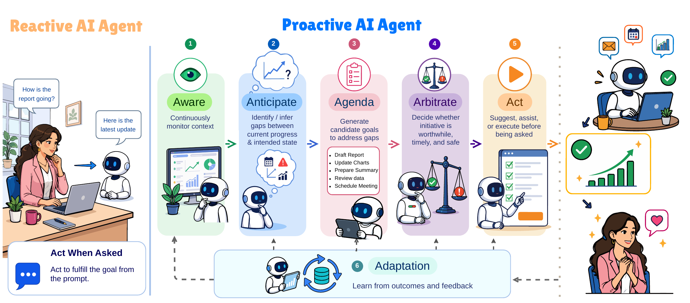
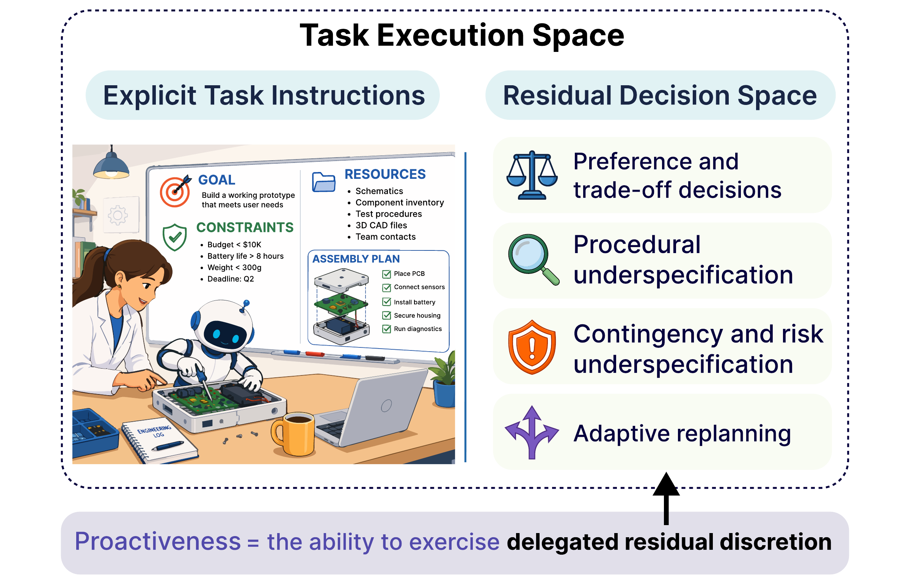
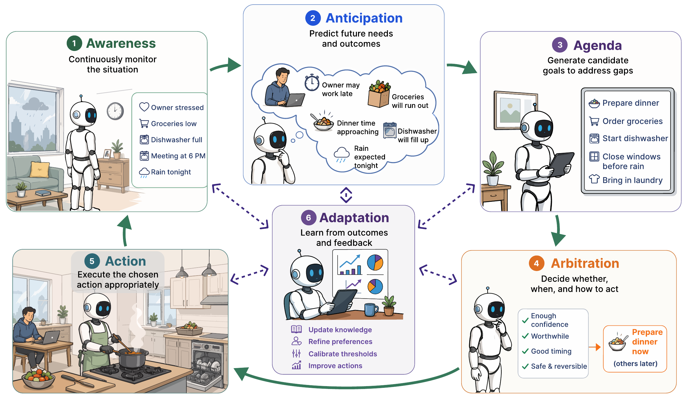
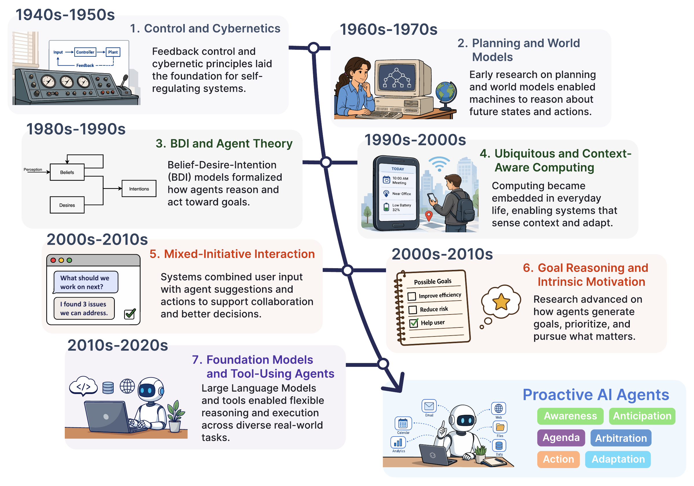

面向超级智能体（Superintelligent Agents）的
主动式 AI（Proactive AI）
从等待指令，到发现值得开展的工作。

6A机制分类体系
13应用领域
80代表性工作
3评估层次
01 · 定义
主动性蕴藏于指令留出的决策空间。
主动性（Proactiveness）是指在任务的剩余决策空间（Residual decision space）内行使受托裁量权（Delegated discretion）的能力，无须为每个决策获取新的指令。
它包括在遵守任务既定目标与约束的前提下，权衡取舍、填补流程空白、处理意外情况并重新规划。
智能（Intelligence）+对齐（Alignment）+主动性（Proactiveness）→赢得的自主权（Earned autonomy）

02 · 框架
六种能力将上下文转化为恰当的主动行为。
感知（Awareness）与前瞻（Anticipation）揭示有价值的缺口。议程形成（Agenda formation）确立承诺。仲裁（Arbitration）判断是否应当介入。行动（Action）在权限范围内实施干预。适应（Adaptation）从结果中学习。

03 · 基础
主动行为日益开放的悠久发展历程。
主动式智能体能力（Proactive agency）汲取了控制与控制论（Cybernetics）、规划与世界模型（World models）、智能体理论、普适计算（Ubiquitous computing）、混合主动式交互（Mixed-initiative interaction）以及目标推理（Goal reasoning）的思想。

04 · 评估
评估主动性（Proactiveness）需要超越任务完成度的证据。
主动式系统必须在三个互补层次上进行评估。即使干预成功，也可能时机不当、缺乏依据或造成负担。
05 · 应用图谱
主动行为与权限沿不同维度演进。
能力更强的系统不会自动获得更多权限。各领域受到验证、反馈、治理与评估等不同因素组合的制约。
06 · 代表性工作
沿 6A 流程比较本综述中的代表性工作。
这些工作由本综述从各应用领域中选出并深入分析。您可以搜索应用表格、按领域筛选，并比较各项工作如何感知、前瞻、把关、行动与适应。
| 系统 | 领域 | 感知（Awareness） | 前瞻（Anticipation） | 仲裁（Arbitration） | 行动（Action） | 适应（Adaptation） | 部署 |
|---|
07 · 摘要
主动式智能体能力（Proactive agency）的统一视角。
正在加载引用…